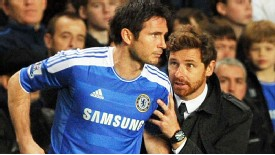

Chelsea midfielder Frank Lampard has reassured fans he is committed to the Blues in the wake of reports he has fallen out with manager Andre Villas-Boas.

The Sun suggested on Tuesday that Villas-Boas did not say a word to Lampard all evening after his winner against Wolves on Monday, fuelling speculation of a rift between the pair.Lampard has found himself in the unfamiliar position of not being an automatic first-team selection this season, with Villas-Boas preferring to utilise younger players in midfield.But the England midfielder is still Chelsea's second top scorer, having contributed eight Premier League goals this season - and he feels he has plenty to offer the club in future.
"I'll always be completely committed to Chelsea because they're my club and I love playing for them," Lampard said. "I like to play 90 minutes and can't hide that - and I don't think the manager would expect anything else."He's the boss and he picks the team but I've been here many years as part of a successful team. It's much easier for me when I'm starting games and playing regular matches to get into a rhythm."When I play I feel I can do things, like I did at Wolves. And when I can do that, then I'll smile more."